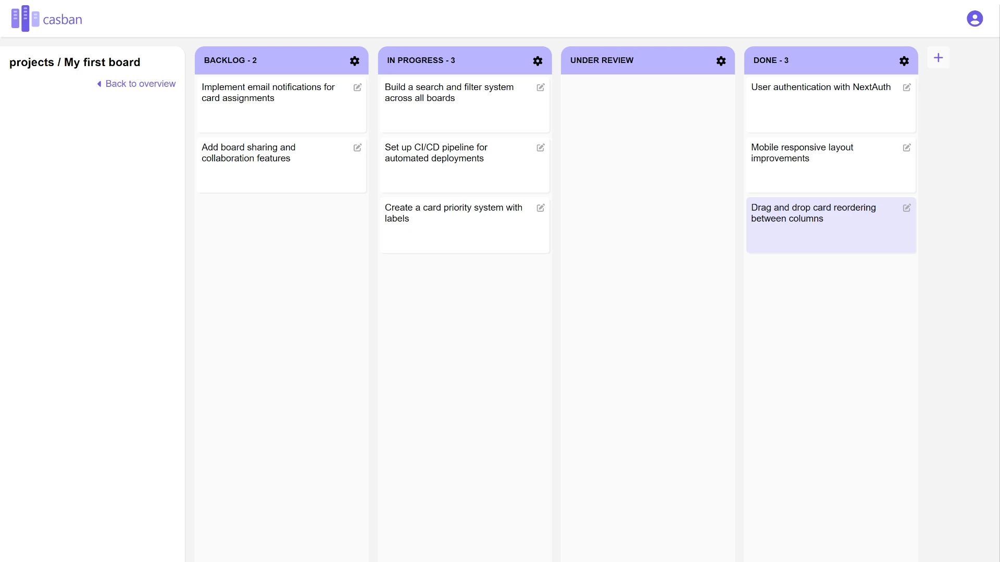
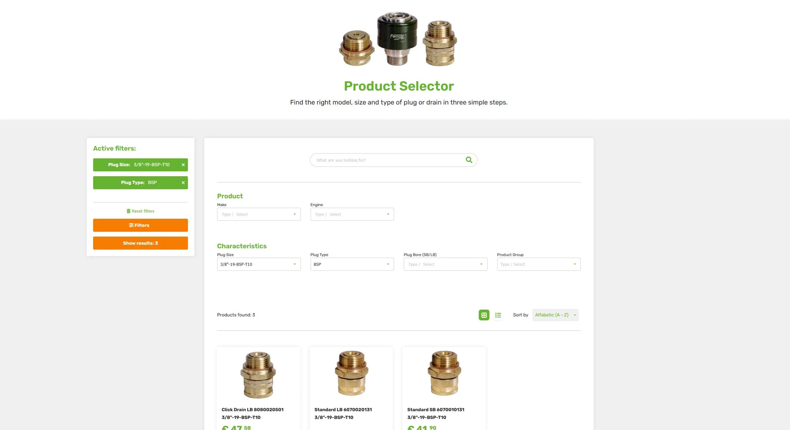
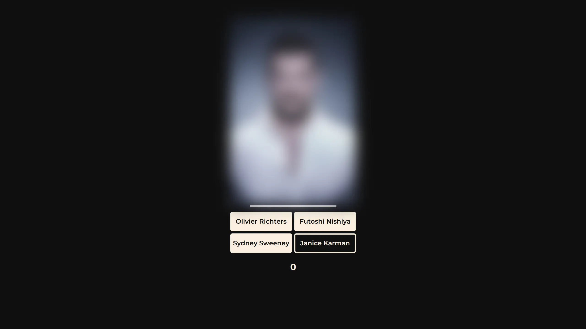

A full-stack kanban board with authentication and drag-and-drop. Optimistic updates make every change feel instant while it syncs to the database in the background.
Fullstack developer
Building things with care, from clean code to the final detail. Based in Amsterdam.
Hi, I'm Caspar. I spent nine years cooking for a living, but I'd always been curious about code. In 2020 I tried Harvard's CS50 to see what programming was really about, and I was hooked. I kept learning alongside the kitchen, and in 2025 I made it my job.
What I like most about this work is that it keeps both sides of me busy: the analytical one and the creative, pragmatic one. I can get lost in speeding up a database query or reading about algorithms, and just as easily in how something should feel to use, or what it really does for its users. I love that variety, and that there's always more to learn.
I do my best work among people who care about what they build and about each other, with experienced developers to learn from and room to take on responsibility.
Outside of work I'm usually tinkering with game development, working out, watching a film or trying new restaurants.
}Part of an agile team building a SaaS platform (CMS, PIM, CRM, e-commerce) that powers 50+ B2B websites. Also the go-to contact for stakeholders on CRM and e-commerce features.
Career switch: from professional kitchens to software development.
Nine years in kitchens ranging from fine dining to catering, both employed and freelance. As sous and head chef, I led brigades of up to 10 people, handling scheduling, onboarding, menu development and cost control, and kept service running under pressure.

A full-stack kanban board with authentication and drag-and-drop. Optimistic updates make every change feel instant while it syncs to the database in the background.

Built at Accessify
A product filter for B2B webshops with thousands of products, powered by Apache Solr. Each client can fully customize it to their needs.

A small game where you guess the celebrity behind a blurred portrait. The faster you guess, the more points you get, and your score is saved between visits.